Swipe sideways to look around the room →
APPOT: A Long Jog
A 3-minute animated short for CMU's 270° CAVERN
- 3D generalist, ETC
- Made on my own
- Blender
- 270° stereo 3D
- 2026
A young inventor mixes an apple seed and a carrot, grows a strange new fruit called the Appot, eats it, and can't stop running, until he finds out that water is the answer.
- Job
- Part-time 3D Generalist, Entertainment Technology Center, CMU (2026)
- Length
- About 3 minutes, 11 scenes, 33 shots
- Platform
- CAVERN at CMU ETC: 270° curved wall, 3 projectors, stereo 3D with shutter glasses
- My role
- Story adaptation, script, character design, character modeling and rigging, animation, scene layout, lighting, effects, rendering
- Environments
- Built from free asset packs to fit the timeline. I laid out, lit and color-tuned each scene for the CAVERN.
- Tools
- Blender (Cycles, Rigify)
- Render
- One panoramic stereo camera, 270° × 50°, top-bottom stereo, 5760 × 2400
- Render time
- About 1 min per frame × 6,000 frames ≈ 100 hours
- Supervisor
- John
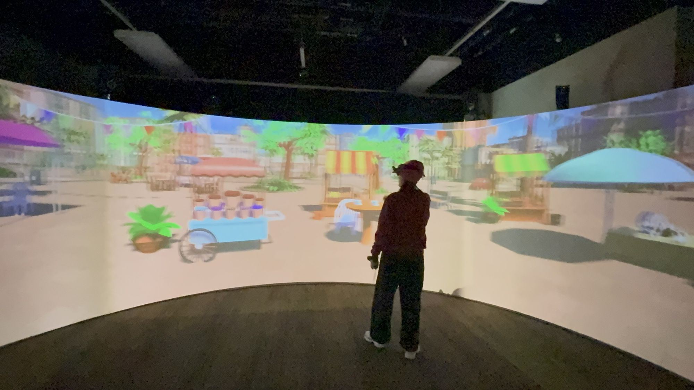
What is the CAVERN?
The CAVERN is a room at CMU where the screen wraps 270° around you, and everything is in 3D with glasses. So I didn't make a film for a rectangle, I made one for a whole room.
The story
I read 13 short stories and picked Appot. Running is perfect for a 270° room, because the whole world can rush past you. The cause and effect is simple: eat the fruit, can't stop, water fixes it.
I turned it into a script and a shot list, and planned every shot for the left, center and right wall. I also added a new opening and ending: Gilbert starts alone at the playground and ends with the same kids around him.
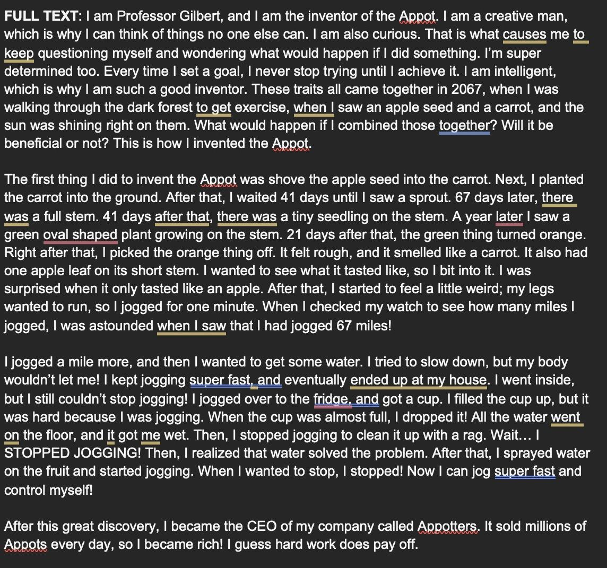
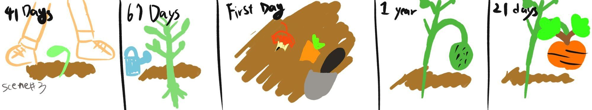
Swipe to see more · tap to enlarge
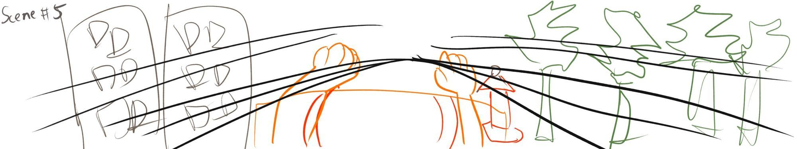
Swipe to see more · tap to enlarge
Meet Gilbert
Gilbert is a curious kid inventor who thinks he is very cool. Round and chubby so he feels friendly, big glasses and a lab coat so he reads as a tiny professor.
- First drawing
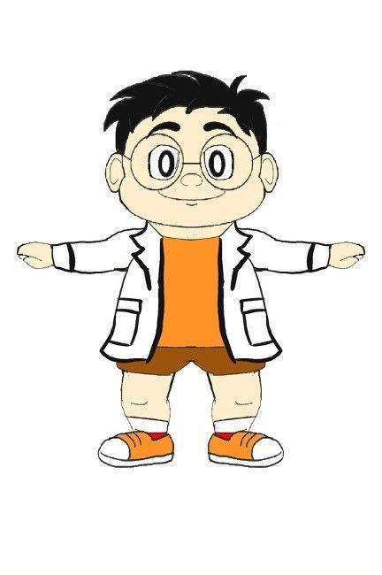
- Base mesh
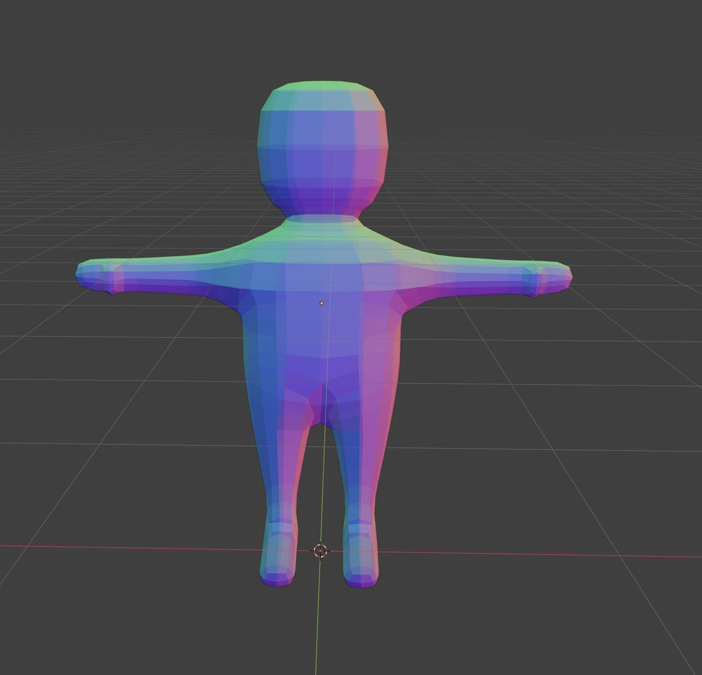
- Shape and face
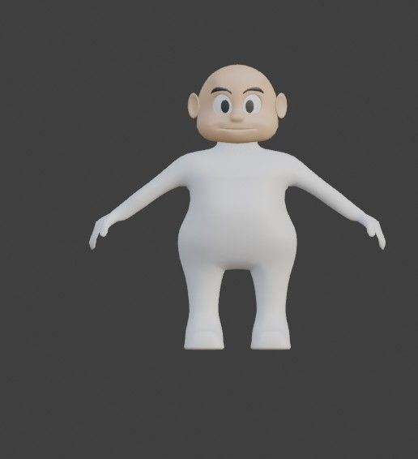
- Final Gilbert
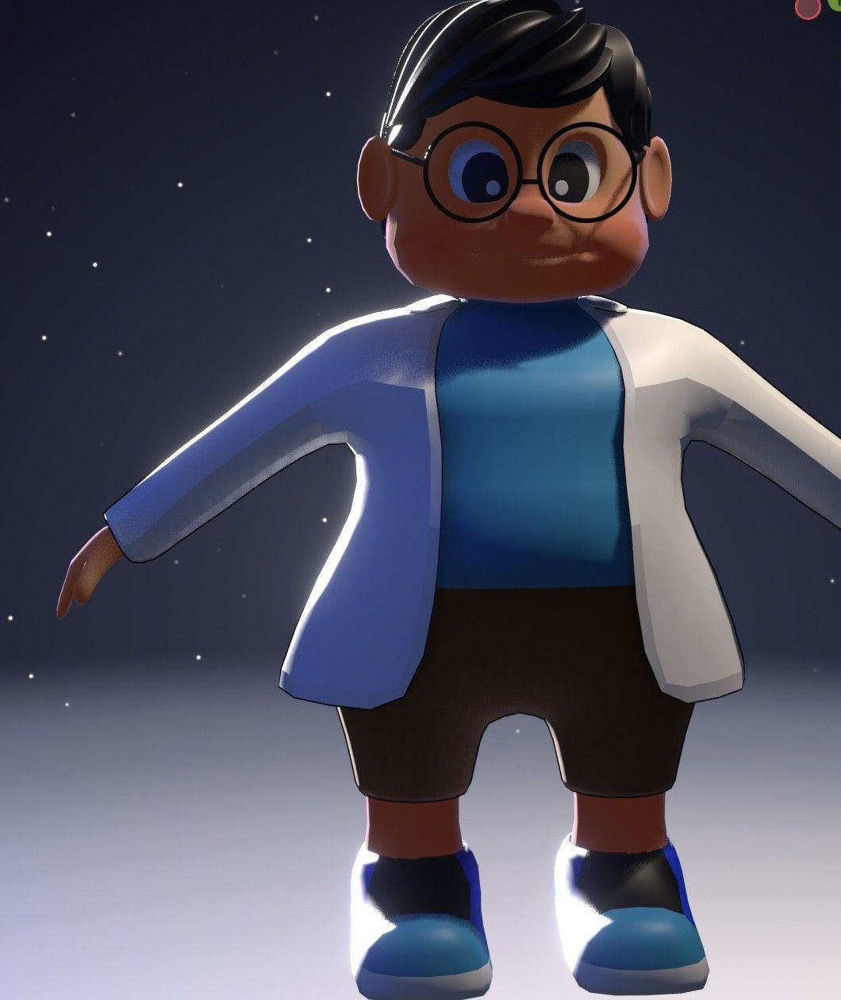
I modeled and rigged him in Blender, and filmed myself as reference for his moves.
Rendering 270° in 3D
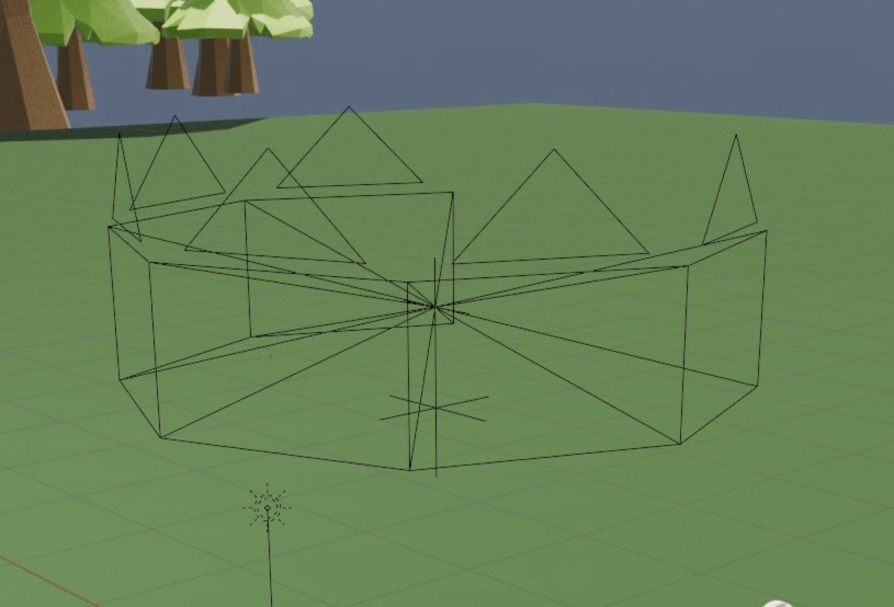
My first try used 6 cameras in a ring, stitched together. Where two cameras met, the ground broke: lines didn't match and the light jumped.
The answer was Blender's built-in stereoscopy with one panoramic camera. One camera, one render, no seams. The cost: it only works in Cycles, so rendering took about 100 hours.
6 cameras vs. 1 panoramic camera
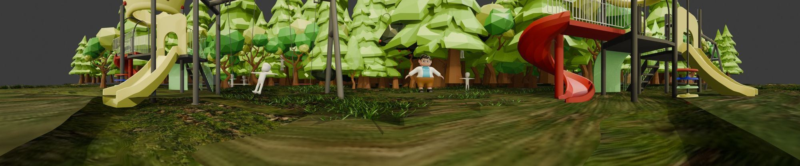
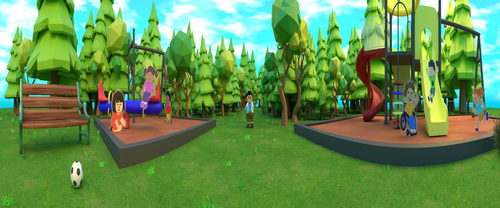
Before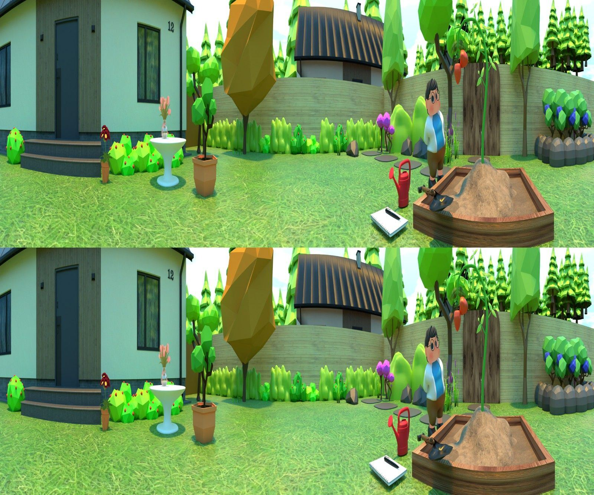
One final frame in top-bottom stereo: the left eye on top, the right eye below. The CAVERN glasses split them so the room looks 3D.
Testing in the real room
My first test on the real wall was too dark and hard to read. I learned to push colors brighter, avoid dark areas, hide seam lines behind trees, and keep action in the middle distance.
The forest, before and after the test
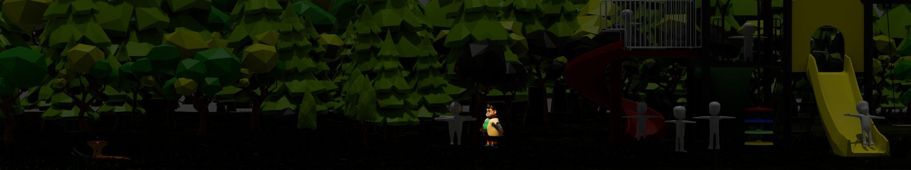
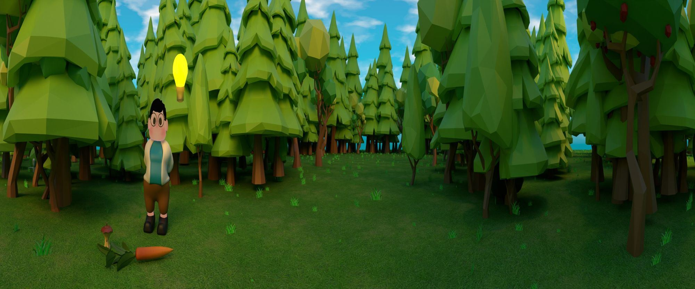
AfterAfter the test I made the forest much brighter and gave it its own space, apart from the playground.
Designing for comfort and attention
A fast first-person run in a 270° room can make people dizzy. The camera only moves forward, never turns or tilts, and the road gives the eye one place to rest. Cartoon speed lines make it feel fast without moving the camera faster.
Each new scene starts where the eye already is. The forest scene ends with Gilbert on the left, and the backyard scene starts with him in the same spot. I did this with the picture only.
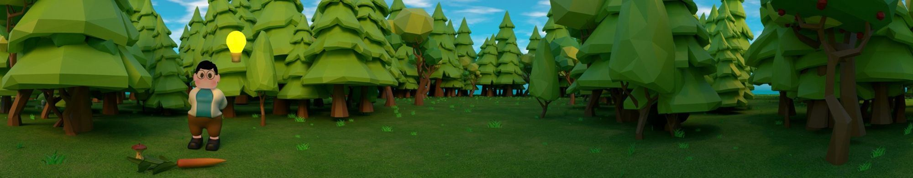
Swipe to see more · tap to enlarge
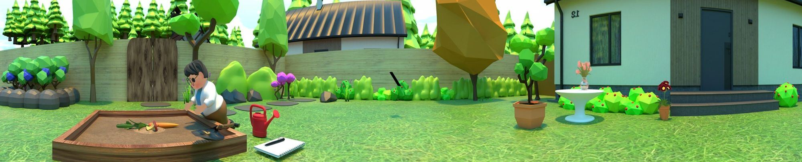
Swipe to see more · tap to enlarge